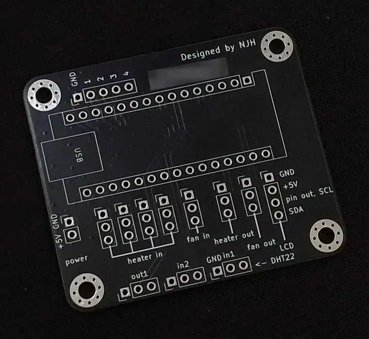

Filament Dryer Cabinet
필라멘트 250개를
보관하는 건조장
제가 일하던 3D 프린팅 사업장의 필라멘트 약 250개를 말리면서 그대로 보관하는 장비입니다.기성 랙 캐비닛을 서랍형으로 개조하고, 히터를 제어하는 보드와 펌웨어를 직접 만들었습니다.

제가 일하던 3D 프린팅 사업장의 필라멘트 약 250개를 말리면서 그대로 보관하는 장비입니다.기성 랙 캐비닛을 서랍형으로 개조하고, 히터를 제어하는 보드와 펌웨어를 직접 만들었습니다.
3D 프린터용 필라멘트는 공기 중의 습기를 먹으면 출력 품질이 떨어집니다.
사업장에서는 필라멘트 공급 장치인 뱀부랩 AMS 2 Pro로 필라멘트를 말렸지만, 한 대에 4개씩만 넣을 수 있었고 말린 필라멘트를 보관하는 용도도 아니었습니다.
대표님과 이야기를 나누다가, 모든 필라멘트를 말리면서 그대로 보관하는 장을 만들자는 결론이 나왔습니다.
시판 필라멘트 건조기는 비쌌고, 사업장 환경에도 맞지 않았습니다.
깊은 장의 뒤쪽까지 필라멘트를 채우려면 서랍처럼 통째로 빼낼 수 있어야 했는데, 그런 제품은 찾지 못했습니다.
그래서 기성 랙 캐비닛을 개조해 서랍형 건조장을 직접 만들었습니다.
서랍은 두께 5mm와 3mm 폴리카보네이트(PC) 판에 3D 프린팅한 구조물을 붙여 보강했습니다. 깊숙한 곳의 필라멘트도 서랍째 꺼낼 수 있습니다.
더운 공기는 위로 올라가서 아래 칸이 덜 데워지기 쉽습니다. 그래서 히터와 팬을 뒤쪽에 달고, 처음부터 아래를 향해 바람을 불게 했습니다.

히터 모듈. 40mm 팬과 3D 프린팅 덕트
건조장 안의 위·아래와 바깥에 온습도 센서를 하나씩 달고, 이 값으로 히터와 팬을 제어합니다.
건조장 안을 일정한 온도로 데워 유지합니다. 공기 속 수분의 양은 그대로여도 온도가 오르면 상대습도가 내려가고, 필라멘트가 마릅니다.
안과 밖의 절대습도(공기 속 실제 수분량)를 비교해, 안쪽이 더 습할 때만 환기합니다. 필요 없을 때 데운 공기를 버리지 않기 위해서입니다.
위아래 센서의 온도 차이가 벌어지면 내부 팬을 돌려 공기를 섞습니다. 아래 칸까지 같은 온도로 맞추기 위해서입니다.
예를 들어 25℃ 공기를 50℃로 데우면, 공기가 담을 수 있는 수분이 약 3.9배로 늘어납니다.
공기 속 수분의 양은 그대로이므로 상대습도는 바깥의 약 26%로 내려갑니다.
| 실내 (25℃) | 50℃로 데웠을 때 (계산) | |
|---|---|---|
| 상대습도 40% | → | 약 10% |
| 상대습도 60% | → | 약 15% |
| 상대습도 80% | → | 약 21% |
온도를 50℃로 잡은 예시 계산입니다(밀폐 가정, Magnus 식). 실제 설정 온도나 실측값이 아닙니다.
아두이노 나노를 꽂아 쓰는 제어보드를 KiCad로 설계했습니다.
릴레이로 PTC 히터 5개를 켜고 끄며, 온습도 센서 3개와 팬도 이 보드에 연결됩니다.
처음에는 LCD와 버튼 4개로 설정을 바꿀 수 있게 만들었지만, 하드웨어 문제를 겪은 뒤 조작부를 줄이고 자동 제어에 집중했습니다.


오작동을 펌웨어 버그로만 보고 코드를 고치는 데 시간을 많이 썼습니다. 실제로는 하드웨어 문제가 섞여 있었고, 지금은 노이즈와 전원을 켤 때 튀는 전압을 주된 원인으로 보고 있습니다. 이후로는 증상만 보고 원인을 단정하지 않습니다.
히터를 끊어 주는 별도 보호 회로 없이 펌웨어로만 온도를 제어합니다. 그래서 히터가 과열될 가능성이 없는지 시험으로 확인했습니다.
기성 건조기가 비싸서 직접 만들기 시작했지만, 발주 실수와 반복된 시제품 실패로 제작비가 약 100만 원까지 늘었습니다.
입대 전에 구조와 사용법을 정리한 인수인계 문서를 남겼습니다.그 뒤로 따로 문의는 없었습니다.